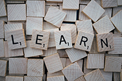
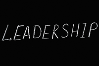
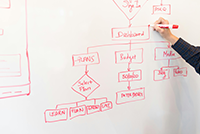

My academic journey has been shaped by a lifelong love of learning and a deep curiosity about how different disciplines intersect. I began at Benedictine University in Lisle, IL, earning a Bachelor of Science in Mathematics with a minor in Philosophy in 2005, graduating Magna Cum Laude. My passion for inquiry and analytical thinking was further recognized through induction into Kappa Mu Epsilon and Pi Mu Epsilon, national honor societies in mathematics.
I went on to complete my Master of Library and Information Science (MLIS) at Dominican University in 2007, where I was inducted into Beta Phi Mu, the international honor society for library and information science. Later, in 2018, I returned to Dominican to complete a Certificate of Special Study in Academic Libraries, allowing me to build targeted expertise in academic librarianship.
In 2014, I earned a Master of Arts in History from the University of Nebraska at Kearney, with concentrations in 19th Century American and Modern European history. As a member of Phi Alpha Theta, I deepened my understanding of historical research and critical analysis—skills that continue to inform my work today.
Since 2014, I've also taken a wide range of credit courses at McHenry County College in Crystal Lake, IL, reflecting my desire to stay versatile and current. I've studied programming, graphic design, business, and psychology, and earned certificates in both Bookkeeping and Organizational Leadership—all of which have added valuable perspective to my professional toolkit.

In addition to formal educational experiences, I have also completed a wide range of professional development activities, including earning a Six Sigma Green Belt, completing courses in pedagogy, copyright, and open education.